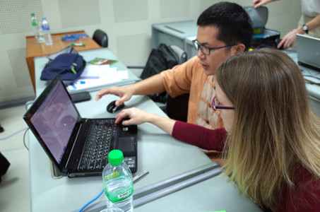
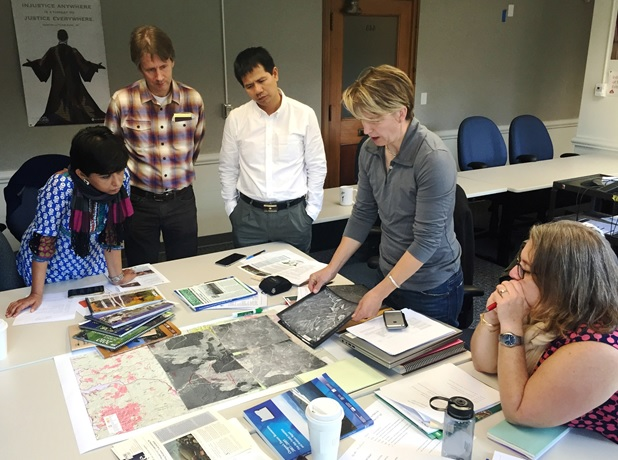
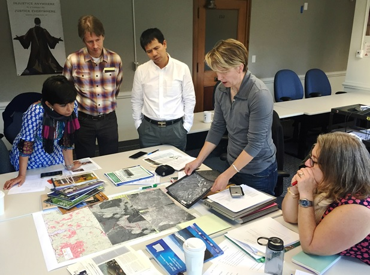

About the program
What is SilvaCarbon?
SilvaCarbon is an interagency technical cooperation program of the US Government to enhance the capacity of selected tropical countries to measure, monitor, and report carbon in their forests and other lands. Drawing on the expertise of multiple US Government agencies and partners, the program provides targeted technical support to countries in the process of developing and implementing national forest and landscape monitoring systems. SilvaCarbon leverages state-of-the-art science and technology to advance the generation and use of improved information related to forest and terrestrial carbon
Tropical deforestation and forest degradation pose a serious threat to people, economies, and biodiversity worldwide. Vital forest resources continue to disappear at an alarming rate in many tropical countries, undermining economic development and exacerbating social and environmental challenges. To address this concern, decision makers need more and better information about how forests and other landscapes are changing over time. There is a growing need for improved information about changes in forest and terrestrial carbon, in particular, to strengthen forest and land use management and planning, curb forest loss through mechanisms such as Reducing Emissions from Deforestation and Forest Degradation (REDD+), and track and meet sustainable development goals.
Recognizing this need, many tropical countries have prioritized the establishment of national forest and landscape monitoring systems. National forest and landscape monitoring systems integrate satellite imagery and other remote sensing data with ground-based forest inventory data to generate accurate, up-to-date information about forest and landscape dynamics and associated carbon dynamics. This information supports multiple objectives and is essential for guiding decisions related to conserving forests and biodiversity, combatting illegal logging, and responding to climate change. National forest and landscape monitoring systems also contribute to greater transparency and accountability, helping to level the playing field for international trade, private investment, and multilateral accords.
Recent years have seen the rapid advancement of forest and landscape monitoring science and technology. This includes impressive improvements in satellite data availability and quality along with improved ground measurements, enhanced modeling capabilities, and increased knowledge through research. While these advancements offer tremendous potential for improved forest and landscape monitoring, many countries face technical challenges identifying and implementing monitoring approaches that suit their unique needs. International collaboration is critical for supporting the establishment of robust, sustainable national forest monitoring systems that are appropriate to countries’ individual circumstances.
With this in mind, US federal agencies have joined together to create the SilvaCarbon program. SilvaCarbon capitalizes on the accumulated expertise of the US scientific and technical community to build capacity worldwide for monitoring, measuring, and reporting forest and terrestrial carbon. In conjunction with tropical developing nations and other partners, SilvaCarbon builds capacity by working directly with technical teams in partner countries, identifying and disseminating good practices and cost-effective technologies, and facilitating technical cooperation at national, regional, and global scales.
Who is involved in SilvaCarbon?
Collaboration is central to SilvaCarbon’s mission. As an interagency initiative of the US Government, SilvaCarbon mobilizes forest and landscape monitoring expertise and resources from multiple US agencies and domestic and international partners across government, academia, civil society, and industry. Key institutions involved in SilvaCarbon are listed below.
US Government Agencies


Funding for SilvaCarbon has been provided primarily through the USAID Sustainable Landscapes program and the US Department of State’s Bureau of Oceans and International Environmental and Scientific Affairs. Program implementation has been led primarily by USFS, USGS, EPA, and NASA.
SilvaCarbon also works closely with a variety of other US Government programs, including the NASA-SERVIR program. SERVIR provides state-of-the-art, satellite-based Earth monitoring data, geospatial information, and tools to help improve environmental decision-making among developing nations in Eastern and Southern Africa, the Hindu-Kush-Himalaya region, and the Mekong River Basin in Southeast Asia.
Academia
Universities and research institutions play a crucial role in identifying and developing forest and landscape monitoring tools and approaches, and strengthening the underlying science. SilvaCarbon collaborates with a number of partners from academia to achieve its capacity-building objectives, including:
- The University of Maryland Global Land Analysis and Discovery (GLAD) group
- The Boston University Boston Education in Earth Observation Data Analysis (BEEODA) program
- The Wageningen University Geo-information Science and Remote Sensing department
The Global Forest Observations Initiative

SilvaCarbon is the primary US contribution to the Global Forest Observations Initiative (GFOI), an international consortium of donor countries, multilateral institutions, and other organizations established under the intergovernmental Group on Earth Observations (GEO). GFOI works to increase access to and application of Earth observation data for use in national forest monitoring systems, and provides a coordination mechanism among international actors engaged in forest and carbon monitoring capacity-building. SilvaCarbon co-leads the GFOI capacity-building component together with the Food and Agriculture Organization of the United Nations (FAO).
Where We Work
SilvaCarbon is global in geographic scope with a focus on tropical forested countries. To date, the program has collaborated with more than 25 countries through a combination of bilateral, regional, and global engagement. Current SilvaCarbon countries and regions are shown below.
Latin America and the Caribbean

SilvaCarbon began working with the Andean Amazon countries of Ecuador, Colombia, and Peru in 2011, and expanded to include the Central American and Caribbean countries of Costa Rica, Dominican Republic, El Salvador, Guatemala, Honduras, Nicaragua, and Panama in 2014. The shared language, depth of experiences, and ongoing communication and technical support across Latin and America and the Caribbean contribute to excellent opportunities for South-South collaboration. SilvaCarbon capitalizes on these opportunities by providing country-specific support to individual countries and facilitating cooperation and knowledge exchange at the regional level.
The SilvaCarbon Latin America and Caribbean Regional Program builds capacity for national-level forest carbon Measurement, Reporting, and Verification (MRV) for countries across the REDD+ readiness spectrum, complementing other donor efforts to assist governments in the region to track forest emissions. While countries in the region have significantly advanced in the use of remote sensing products and the implementation of forest inventories, critical capacity gaps remain. Countries seek targeted assistance from SilvaCarbon related to reporting results, mitigation activities, and strengthening institutional capacities to ensure the long-term sustainability of monitoring efforts.
Based on identified country needs, the SilvaCarbon Latin America and Caribbean Regional Program currently focuses on three technical areas: (1) implementing national forest inventories that are consistent and can be integrated with remote sensing products generated to estimate change areas, and consistently mapping land use classes beyond forests with a replicable methodology; (2) reporting forest degradation; and (3) developing the regional community of forest and terrestrial carbon technical experts.
Illustrative Program Results

- With technical support from SilvaCarbon, Peru finalized its first forest dynamics map and is completing the first phase of its national forest inventory. Ecuador also completed its first national forest inventory and first forest-change map for an area typically covered by clouds. Colombia was able to generate estimates of forest cover change annually for the first time, as well as develop a national forest inventory plan. SilvaCarbon assistance with national forest inventories in the three countries effectively created the first detailed "census" of the biologically diverse and globally important Andean Amazon region, and will enable the generation of detailed, systematic information for national GHG accounting and policy decisions. In addition, SilvaCarbon helped install intensive carbon monitoring sites in all three countries to advance understanding of forest-climate dynamics, build capacities for using new carbon monitoring techniques, and provide research opportunities for scientists and students.
- SilvaCarbon technical exchanges have brought together stakeholders from across Central America and the Caribbean to build national forest monitoring capacities and support the use of appropriate tools and methodologies for measuring and monitoring forest carbon at national and regional scales. These exchanges have been instrumental in developing a regional community of forest monitoring experts and equipping countries to address key technical challenges related to forest inventory planning and design, forest attributes and sampling, allometric equations, statistical methods for generating biomass and carbon estimates, and integrating remote sensing and field data. In Honduras, SilvaCarbon provided extensive technical support in the re-design of the national forest inventory, which will now incorporate portable data recorders to capture forest data more accurately and efficiently.
Asia-Pacific
Bangladesh Program

The SilvaCarbon Bangladesh program, initiated in 2014 with funding from USAID-Bangladesh, is assisting the Bangladesh Forest Department (BFD) and other institutions in Bangladesh with the development of the country’s first national forest monitoring system. SilvaCarbon activities in Bangladesh are coordinated by in-country program staff based in Dhaka, and are closely coordinated with parallel efforts led by FAO.

Bangladesh’s biologically rich forests and wetlands, including the internationally recognized Sundarbans mangrove forest, provide crucial economic, social, and environmental benefits for the country, region, and world. As one of the most climate-vulnerable countries on Earth, Bangladesh depends on its forests and wetlands for protection against climate-related impacts such as catastrophic floods and other disasters. The country has lost over half of its forests in the last 30 years, however, and its remaining forested areas are critically threatened.
The Government of Bangladesh is committed to addressing these challenges by building forest monitoring capacities across government, civil society, and industry, and by participating in REDD+. As part of those efforts, the country has recently begun developing its first national forest monitoring system. As the responsible agency, the BFD has prioritized the development of a robust, sustainable, and cost-effective national forest monitoring system that leverages the strengths of both ground-based forest inventory data and remote sensing data. SilvaCarbon is providing technical support to help the nation achieve this goal.
Illustrative Program Results
- Bangladesh is now in the process of conducting its first national forest inventory, developed by BFD in collaboration with SilvaCarbon and FAO, representing a major step toward sustainable forest management and REDD-readiness. The BFD is also able to generate forest cover and forest cover change maps with freely available Landsat data by applying remote sensing training and tools provided by SilvaCarbon, and has been working with SilvaCarbon-supported partners at the University of Maryland to document forest cover change from 2000-2014 and map annual forest cover change for 2015-2016.
Vietnam Program

The SilvaCarbon Vietnam program began collaborating with government, research, and other partners in Vietnam in 2013 to address the country’s priority forest information needs. SilvaCarbon provides technical support focused on identified capacity gaps, including strengthening capabilities for consistent collection and storage of forest data, producing consistent and comparable mapping products, and improving GHG emissions tracking.
The Government of Vietnam has made significant efforts to increase the economic returns from its forested lands in order to increase the viability of forest conservation against competing interests in forest production. Increasingly robust forest and GHG data is critical for achieving the country’s forest conservation goals. SilvaCarbon partners in Vietnam recognize the importance of forest monitoring, forest inventory, and GHG accounting information for achieving multiple objectives, including guiding forest management and conservation planning, supporting REDD+, and fulfilling national and international reporting requirements.
SilvaCarbon support for Vietnam is coordinated by a local advisor based in Hanoi, and currently addresses three interrelated technical areas: (1) improving the accuracy and statistical robustness of the national forest inventory; (2) integrating remote sensing data with ground-based forest data to support an improved understanding of forest cover and change over time; and (3) strengthening the national GHG inventory for the Agriculture, Forestry, and Other Land Use (AFOLU) sector.
Illustrative Program Results
- SilvaCarbon efforts in Vietnam have (1) significantly increased the accuracy and data integrity of the national forest inventory through targeted training for both technical staff and policy representatives, contributing to the approval of a fifth forest inventory cycle for the period of 2017-2020; (2) supported government institutions to develop mapping products using remote sensing data which will enable consistent analysis of forest and landscape information to meet national needs and international reporting requirements; and (3) supported government technicians to develop the country’s first national GHG inventory for the land sector by applying the Agriculture and Land Use software tool.
South and Southeast Asia Program
The SilvaCarbon South and Southeast Asia Regional Program was initiated in 2014 to provide regional capacity-building support for eight countries: Cambodia, Lao PDR, Indonesia, Nepal, the Philippines, Thailand, Bangladesh, and Vietnam. In addition to regional support, the program provides country-specific support to Cambodia, Lao PDR, and Nepal. Strategically pairing regional knowledge exchange with country-specific assistance maximizes the cost-effectiveness of SilvaCarbon resources, helping countries overcome key technical challenges while also learning from one another about successful approaches and potential pitfalls. Capacity-building activities implemented by the South and Southeast Asia Regional Program are jointly developed with national stakeholders in each country and coordinated with different development partners working in the region, including the SERVIR-Mekong and SERVIR-Hindu Kush Himalaya hubs.
Forest conservation and management is a priority for countries throughout South and Southeast Asia, particularly as national governments in the region work to transparently report emissions from the Agriculture, Forestry, and Other Land Use (AFOLU) sector. AFOLU-related activities are included in national plans and strategies of most countries in the region, and some countries (Cambodia, Lao PDR, Indonesia, Nepal, the Philippines, and Vietnam) have developed forest-specific emission reduction targets.
With this in mind, SilvaCarbon programming in the region focuses primarily on two technical areas: 1) developing in-country forest mapping and reporting products and capacities, and 2) designing long-term spatial data management strategies that feed into national forest monitoring systems and contribute to complete and consistent representation of national land bases.
Illustrative Program Results

- SilvaCarbon has helped foster a regional community of forest monitoring experts across South and Southeast Asia that provides a basis for ongoing South-South exchange and capacity-building, both in terms of solving technical problems and sharing experiences related to institutional arrangements and other challenges. SilvaCarbon training has strengthened the skills of technical specialists from the region to work with open source tools and platforms for forest monitoring, helping to ensure sustainability and reduce dependency on expensive data and processing software. Forestry agencies from Cambodia, Lao PDR, and Nepal are improving their forest cover change estimates through collaboration with SilvaCarbon-supported partners at the University of Maryland, and are working to implement international good practice guidance to ensure transparency, consistency, comparability, completeness, and accuracy of forestry data.
Africa


In 2014 SilvaCarbon began providing bilateral support to Democratic Republic of the Congo (DRC), Republic of Congo (ROC), and Cameroon with the goal of complementing existing support from the Central Africa Regional Program for the Environment (CARPE). CARPE, funded by USAID, is the primary US Government environmental program in the region and the largest USAID conservation program in the world. A principle CARPE objective is to strengthen capacities to monitor forest cover change, GHG emissions, and biodiversity. In all three SilvaCarbon Congo Basin countries, the SilvaCarbon program leverages the presence of in-country coordinators to ensure relevancy of programming and support activity implementation.
The Central African Congo Basin is the second-largest humid tropical forest in the world, harboring tremendous biodiversity and carbon in its dense interior. Forests in the Congo Basin provide essential environmental services to surrounding communities, and are widely recognized as a global priority for forest and carbon conservation and management. A number of Congo Basin countries have committed to reducing forest loss and associated emissions, and are working with a variety of international partners including SilvaCarbon to achieve their goals. Stakeholders in the Congo Basin have requested technical support in developing cost-effective forest monitoring approaches that are suited to the large, dense, and often inaccessible forests throughout the region.
SilvaCarbon assists DRC, ROC, and Cameroon in accordance with identified national forest monitoring needs, which include building foundational capacities for REDD+, implementing cost-effective mapping methodologies, and integrating previously unquantified wetland forests into existing national forest inventory systems.
Illustrative Program Results
- In the Congo Basin more than 30 local master's degree candidates have been supported through SilvaCarbon, and have agreed to return home to their countries after completing their degrees to contribute to forest management efforts. SilvaCarbon also supported the design of a forests and climate master's degree program curricula by the University of Dschang in Cameroon, and helped develop a regional capacity-building hub focused on forests and climate. SilvaCarbon has supported significant progress toward REDD+ implementation in Cameroon by facilitating the production of thematic forest change maps for 2010-2015, and by providing technical support to the country's MRV Task Force, which links MRV activities with national forest monitoring activities and mobilizes the required expertise for related initiatives.
Global
 

In addition to providing country- and region-specific technical support, SilvaCarbon supports forest monitoring capacity-building at the global level. This includes facilitating coordination among domestic agencies and international institutions, working to increase access to and application of Earth observation data, and contributing to key forest monitoring tools, guidance, and capacity-building resources.
Illustrative Program Results
-
SilvaCarbon has served as a mechanism for linking developing country partners with satellite data providers to increase the availability and use of
space-based observations for national forest monitoring. Through SilvaCarbon, complete archives of
Landsat 7 and 8 Earth observation data were delivered to more than 20 countries to complement and validate their national forest monitoring systems.
SilvaCarbon has also helped develop broadly applicable forest and carbon monitoring tools and guidance materials used by national institutions and
other stakeholders around the world, including, for example:
- The Global Forest Observations Initiative (GFOI) Methods and Guidance Documentation and the accompanying REDDcompass platform. Together, these resources link international reporting requirements with international good practice guidance to provide a systematic workflow approach to guide countries through the complex process of developing forest monitoring and MRV systems for REDD+.
- Collect Earth Online brings FAO’s powerful Collect Earth desktop application to the web browser, allowing users anywhere to collect and analyze high resolution forest monitoring data through Google Earth for a wide variety of purposes including land use, land use change, and forestry assessments.
Activities

SilvaCarbon responds to the forest and landscape monitoring needs of partner countries by conducting a variety of targeted capacity-building activities including direct technical assistance, hands-on training, subject-specific workshops and study tours, and regional-to-global knowledge exchanges. The program has also supported applied research on emerging forest and landscape monitoring approaches, and contributed to the development of globally relevant forest and landscape monitoring tools, guidance, and training materials. See below for more information about SilvaCarbon capacity-building activities worldwide.
SilvaCarbon Spotlight
The electronic newsletter of the SilvaCarbon program provides periodic updates on SilvaCarbon activities, events, publications, and related developments around the globe.
Activity Calendar
View upcoming SilvaCarbon activities
Activity Archives
Access reports and resources from selected past SilvaCarbon activities
Research


SilvaCarbon has supported eleven applied research grants addressing practical carbon measurement challenges identified by country partners. These grants, initiated in 2013 and 2014, examined the use of emerging approaches to monitoring forest degradation, the interoperability of different remote sensing systems and sensors, and carbon estimation methodologies. Findings from the research support SilvaCarbon capacity-building efforts and help to strengthen the scientific basis for forest and landscape monitoring efforts worldwide.
Improving forest emission estimates requires better biomass measurements before and after the change events at local levels, and the effective use and integration with remote sensing data to monitor impacts over larger areas. Novel technologies such as terrestrial laser scanning that provide detailed 3D measurements of tree, canopy structure and allometry rapidly and non-destructively, and the use of high-resolution remote sensing time series (i.e. from RapidEye) offer avenues to increase REDD+ measurement accuracy and precision, and support improved monitoring capacities in developing countries. The research team aims to use both in combination to systematically explore this potential by improving the underlying science, conduct a research synthesis across multiple tropical tests site, and make a direct contribution to monitoring and training in REDD+ countries.
The research team aims to address four questions:
- Better allometry: How can allometries for estimating tropical forest biomass be improved with terrestrial LiDAR (higher accuracies, more samples) and without employing destructive harvesting?
- Logging impacts: What are the impacts of selective logging (incl. collateral damage) on forest biomass and forest structure and canopy in the short and long terms?
- Link ground data to remote sensing: What is the capability and sensitivity of high-resolution satellite time series data to detect changes and related emissions due to selective logging at sub-national scales across several tropical test sites?
- Uptake by national monitoring: How can the novel sub-national monitoring activities of forest degradation be integrated into a national REDD+ monitoring system and related capacity building through SilvaCarbon?
Degraded forests are poorly studied. Despite the rapidly accumulating number of lidar studies, degraded forests are rarely used for calibration. With the exception of some long-term studies of logging, permanent tropical forest research plots have generally avoided degraded forests. Lidar studies of degraded forest structure, particularly for forests that have suffered understory fires, are rare although there are excellent counter-examples of specific studies in logged forests.
This study aims to resolve whether field calibration in degraded forest is necessary for accurate lidar biomass estimation in degraded forests. The research team will test whether lidar biomass calibrations developed from old-growth and secondary forests or “universal” approaches are sufficient for biomass estimation in degraded forests.
The study will respond to the following questions:
- How accurate are lidar biomass calibrations using only old-growth and secondary forests or “universal” equations for degraded forests?
- How much is calibration uncertainty reduced when degraded forest plots are included as part of the calibration data set for lidar biomass estimation over degraded forests?
- Do different degradation pathways (e.g. logging and fire) result in similar structures? And how do those differing structures affect biomass calibration?
- Can calibration curves derived in one region of the Amazon be used for another region?
- Do varying degradation pathways have the same outcome for biomass?
In this proposal, the research team proposes an alternative method for monitoring land change that makes use of all available observations ever acquired by the Landsat satellite for a pixel. Studying a time series of observations rather than comparing individual images or maps makes it possible to continuously monitor the land cover at pixel-level in time. While never implemented in Colombia, the proposed methodology has proven capable of mapping stable and changing land cover with high levels of accuracy and certainty. This research will evaluate the full utility of US satellite data for the development of MRV systems in deforestation hotspots. It will provide a methodology compliant with IPCC Approach 3 for securing activity data for Colombia, and when combined with emission factors provide estimates of carbon emissions and removals as a result of land transitions.
Specifically, this study has the following objectives:
- Estimate the rates of change between the IPCC land categories from 2000 until 2014 for the Department of Caqueta in the Colombian Amazon. This will be accomplished by production of annual maps of activity data with known uncertainty according to IPCC Approach 3.
- Estimate carbon emissions and removals in a gain/loss approach using three different sources of emission factors: field measurements and data from two pan-tropical biomass maps.
- Assess uncertainty in estimated carbon emissions and removals in a Monte Carlo based approach to provide insight to where resources should be allocated to refine the MRV system.
In Central African countries, where deforestation has historically been low, but where logging occurs in over 70% of the forests in some countries, forest degradation may be the most important source of carbon emissions. The uncertainty in quantifying the area affected and the carbon loss through degradation, particularly from selective logging, is large because conventional methods of remote sensing and surveying are not sensitive enough to precisely measure degradation. However, advances in high resolution remote sensing techniques using Light Detection and Ranging (LiDAR) provide an opportunity to improve NFMS by accurately monitoring areas affected by degradation, quantifying the emission factors from different types of logging and estimating carbon sequestration after degradation.
The research team will investigate the following research questions:
- Can airborne LiDAR data accurately detect selective logging intensity and biomass loss?
- To what extent can LiDAR observations distinguish biomass loss from tree felling and gap creation from the residual damage created by skidtrails, landing yards, and logging roads?
- What are the emission and gain factors from selective logging activities?
There are two general approaches to carbon estimation that show promise for MRV-model-based and model-assisted estimation. Model-based estimation in the context of forest attribute mapping relies on a set of modeled, pixel-based estimates, generally in the form of a map derived from remotely sensed data. Precision estimates can come from analyzing the set of pixel values, their uncertainties, and their spatial covariance. Model-assisted estimation is based on a probabilistic design in which ground plots along with auxiliary data from maps derived from remote sensing are used to generate estimates of forest parameters and their variance.
In both approaches, there are two research questions that require additional study:
-
How best to use GIS and ground inventory data collection procedures to spatially integrate the two data types so as to:
- Generate better maps of the forest attribute for both estimation types (i.e., maximize training data information content for modeling)
- Develop the best relationship between the plots and auxiliary information used in the model-assisted or -based estimation (i.e. maximize the relationship between the dependent and auxiliary variables)
- What combination of ground inventory plot type and remote sensing data type usage will lead to the most cost efficient avenue for achieving desired precision of inventory estimates?
This study aims to identify existing ground data in tropical forests and to alter the design of some planned pilot studies to gather variance and cost/time data in 3 or more countries with different ecological conditions. Sources will include the Gabon Phase I inventory, and potentially existing or upcoming data from Peru, Ecuador, Colombia and Panama.
The Republic of Congo is one of a subset of countries where the suspected dominant factor in greenhouse gas emissions from land use change is forest degradation rather than deforestation. For a region such as central Africa, where few trees are harvested per hectare, direct methods of mapping partial canopy cover are not feasible. Indirect methods have been implemented to delineate degraded natural forests. Such approaches use indications of human activity to assign degradation to adjacent natural forests. Quantifying biomass dynamics within degraded forests is a challenge.
This study combines remotely sensed-derived degradation time-series maps with field data collection to assess biomass change within the logged forests of the Republic of Congo. By combining time-series of indirectly mapped degradation, the research team will in effect swap space for time, targeting forests of varying intervals since disturbance. Additionally, directly observable forest cover loss due to infrastructure development in support of logging will be employed to estimate aboveground biomass loss.
This research will integrate large area forest monitoring data from earth observations and in situ inventory data. Forest degradation maps will help target the allocation of biomass plots in assessing carbon stock dynamics within logged areas. The research will advance national-scale RoC monitoring by developing a new method for integrating remotely sensed-derived forest cover loss and degradation maps with inventory data collection. The proposed activity will quantify carbon loss and gain through the life cycle of RoC logging concessions by sampling various aged concessions from 1990 to present. In doing so, a targeted method for quantifying carbon stock changes due to logging activities will be realized.
While change detection from optical time series has progressed well in recent years, the use of radar data for forest cover change detection, which due to its ability to penetrate clouds could be a valuable additional source of information on forest cover change in areas where cloud cover tends to be persistent (i.e., the tropics), is largely underutilized. On April 3rd 2014, the European Space Agency (ESA) successfully launched the first in a new series of earth observation satellites, SENTINEL-1, which will acquire, for the first time, dense time series of C-band (~5 cm wavelength) radar data at medium (~25 m) spatial resolution consistently every three days and at a global scale. According to the European Delegated Act on Copernicus data, ESA will provide free, full and open access to Sentinel-1 data.
SENTINEL-1 hence opens up new possibilities for mining time series of spaceborne optical and radar data for improved operational forest monitoring, in particular in tropical countries. This study aims to support the development of national MRV systems by investigating, in collaboration with governmental agencies in Mexico, Colombia, and Peru, the potential of SENTINEL-1 data for mapping forest cover change.
Human-caused disturbance to tropical forests, such as through intentional use and resource extraction or through unintentional wildfires, cause substantial losses of carbon stocks. But does tropical forest degradation lead to permanent carbon losses? This is a critical question to address in the context of policy discussions to implement REDD+ (Reduced Emissions from Deforestation and Forest Degradation Plus enhancement of forest carbon stocks through conservation and sustainable forest management). We propose to review the current scientific knowledge about the temporal and spatial dynamics of degradation--‐induced carbon emissions to build a coherent picture of the pattern of emissions from different types of degradation across tropical forest regions. Using best available information, we will: i) develop emissions factors (per area) for different types and scenarios of degradation; ii) describe the temporal pattern of degradation emissions and recovery trajectory post--‐disturbance; and iii) assess the evidence that demonstrates how tropical forest degradation leads to a lower carbon state, either through arrested succession, a switch to an alternate vegetation state, or facilitation of future deforestation. The overarching goal of this research is to synthesize existing knowledge on the range of initial gross and longer-term net carbon emissions from different types of degradation activities across tropical regions.
Research questions:
- Theoretical underpinnings: what’s known about the trajectory of tropical forest recovery after human-induced degradation?
- What is the spatial and temporal pattern of emissions from different types and scenarios of forest degradation across tropical regions?
- When and where is degradation just a harbinger of deforestation?
- Through what pathways does forest degradation lead to substantial and permanent carbon losses?
- Alternatively, under what degradation scenarios Do tropical forests tend to recover carbon stocks quickly?
- Case Studies across South America: Country-level Experiences and comparisons of forest degradation
Deforestation and forest degradation account for nearly 20% of global greenhouse gas emissions, more than any sector other than the energy sector (UN REDD, 2009). REDD (Reducing Emissions from Deforestation and Forest Degradation in Developing Countries) is a mechanism designed under the United National Framework Convention on Climate Change to financially support developing countries that are willing and able to reduce emissions from deforestation and invest in low carbon paths to sustainable development. The term deforestation refers to the permanent removal of forests and withdrawal of land from forest use, whereas the term forest degradation refers to detrimental changes that limit a forest’s production capacity. A relevant question pertains to the persistence component of degradation, i.e., is a forest degraded if it recovers from detrimental change that only temporarily limits its productivity? The overall objective of the proposal is to elaborate the definition of degradation by clarifying the persistence component. The research questions are primarily methodological in nature with anticipated outcomes relating to the utility of remotely sensed data for assessing forest degradation. To address these questions, three kinds of will be used, ground inventory, multi-spectral and lidar data.
This study focuses on four specific objectives
- to estimate temporal trends in carbon stocks using ground data and to use these estimates as a standard for comparison
- to construct confidence intervals for estimates of areas of undisturbed and degraded forest land obtained from a combination of ground and multi-spectral data
- to construct confidence intervals for lidar-assisted estimates of carbon stock change for undisturbed and degraded forest land
- to estimate the number of years post-logging after which change in carbon stocks can and/or cannot be detected using lidar data
The purpose of this proposed work is to explore the use of Landsat time series data for mapping and monitoring forest degradation in Vietnam. The degradation caused by tree harvest and slash and burn agriculture is of serious concern in Vietnam (Manley et al., 2013) The proposed work fits under the SilvaCarbon “third stream of work on degradation,” whereby alternative approaches are being solicited for detecting, measuring and monitoring tropical forest degradation. In general, the spatial, spectral and radiometric qualities of Landsat data are particularly well suited for providing landscape characterization, and monitoring degradation in tropical environments (Hansen et al., 2008; Lambin, 1999).
In this proposed project, the overall question is: How can we best use Landsat time series data to provide accurate and meaningful forest degradation information in Vietnam? Some specific questions of that we will address include:
- How do patterns and rates of forest degradation vary among different tropical regions?
- What are the underlying causes behind these differences?
- How do the spatial patterns of forest degradation vary across various selected tropical regions during the previous 28 years (i.e., using the historical Landsat TM 5, 7 and 8 archive)?
- How do the differences in patterns of degradation vary among different types of tropical forests (e.g. dry deciduous versus humid evergreen)?
- What are the relationships between patterns of deforestation and degradation?
- What are the patterns of degradation near or within select natural reserves?
Previous studies conducted at Antimary State Forest (western Brazilian Amazon) have indicated that low-intensity selective logging activities can be detected using three-dimensional canopy structure information derived from measurements from airborne laser scanning data (d’Oliveira et al., 2012). Using very-high-density lidar data (> 24 pulses/sq.m.), a relative density model (RDM) can be developed that represents the density of lidar returns (and vegetation) within a layer in the forest canopy between 1 and 5 meters height above ground. Variability in the density within this layer was found to be highly sensitive to forest impacts associated with selective logging, such as the development of skid trails and logging roads. A more recent study utilized multi-temporal airborne lidar data sets to quantify the reduction in biomass/aboveground carbon due to selective logging activities (Andersen et al., in review). This study showed that even relatively low levels of biomass change (10-20 Mg/ha) could be detected and quantified using changes observed in airborne lidar structural metrics. While the results of these studies are highly encouraging and indicate the potential utility of airborne lidar as a tool in detecting and characterizing forest degradation in tropical areas, there are several remaining critical research questions that will determine practical value of lidar for this application. For example, it is unclear how much the lidar density can be reduced and still maintain an adequate level of accuracy. The lidar data used in these studies was very high density (24 pulses/sq.m. and 10 pulses/sq.m. for 2010 and 2011 data respectively). While these densities were appropriate for research studies, they are not economically feasible for large-area acquisitions, where we would expect densities closer to 1-4 pulses/sq.m.
We propose to investigate whether the quality of 1)the lidar-derived terrain model, 2) the information provided by the RDM and 3) the lidar-based measurement of changes in biomass/carbon via a model-based approach is sensitive to the density of the airborne lidar data, and provide recommendations as to the lowest lidar density (i.e. most economical) that still yields acceptable results for these three applications.
Contacts
The SilvaCarbon interagency team consists of representatives from numerous agencies and partners who contribute in different capacities. A non-exhaustive list of key program contacts is provided below.
SilvaCarbon Steering Committee Co-Chairs

Global Program


Latin America and Caribbean Regional Program


Central Africa Programs
South and Southeast Asia Regional Program


Vietnam Programs